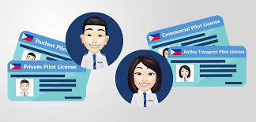
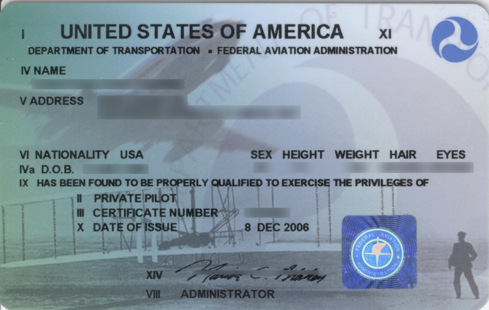

-Kinds of pilot license

- Private Pilot License(PPL)
- Commercial Pilot License(CPL)
- Airline Tranport Pilot License(ATP)

1. Private Pilot License.
- A private pilot is one who flies for pleasure or personal
- Pass the required practical test business without accepting compensation for flying except.
- Obtain a third-class medical certificate issued under in some very limited, specific circumstances.
The Private 14 CFR part 67 Pilot Certificate is the certificate held by the majority of 1-17 active pilots. It allows command of any aircraft (subject to appropriate ratings) for any noncommercial purpose and gives almost unlimited authority to fly under VFR. Passengers may be carried and flight in furtherance of a business is permitted; however, a private pilot may not be compensated in any way for services as a pilot, although passengers can pay a pro rata share of flight expenses, such as fuel or rental costs. If training under 14 CFR part 61, experience requirements include at least 40 hours of piloting time, including 20 hours of flight with an instructor and 10 hours of solo flight